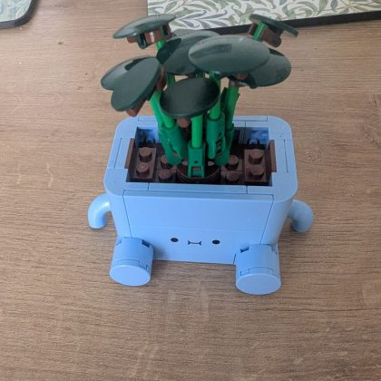

BUILD REVIEW
Spot the wrong brick.
Fix it with confidence.
Upload a photo of your build and a photo of how it should look. We’ll compare them and show exactly what to change.
01
REQUIREDYour current build
✦
For the sharpest results
Use bright, even light and photograph the build straight on.
02
REQUIREDWhat should it look like?

No reference selectedRequired — add a photo of the finished model or an instruction page
OR
Your photos are used to analyse this build and then discarded. Nothing is stored unless you choose to report a wrong answer.